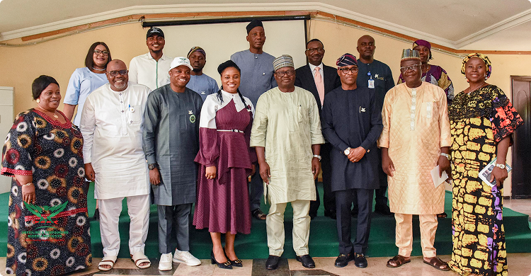

News
We drive stories showcasing Nigeria’s beauty and true potential, fostering unity and patriotism.
Featured News

URNI Engages NOA on Strengthening National Patriotism and Youth
Development.
URNI Engages NOA on Strengthening National Patriotism and Youth
Development.

URNI Engages NOA on Strengthening National
URNI Engages NOA on Strengthening National Patriotism and Youth.